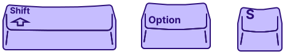

It's kinda lonely here

 Github Access Token
Github Access Token
Instructions on how to make one can be found here. If you already have a token used on Stash in another browser, paste it here to sync your data.